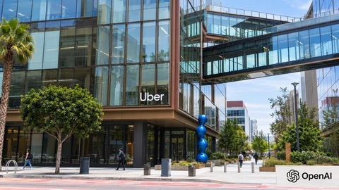

Financial news, market analysis and technology
Top Story
Market Analysis View all →
Market Analysis
Treasury’s $26 billion TIPS auction locks in a 2.367% real yield
A new five-year inflation-protected Treasury pays a 2.25% coupon. Its auction yield shows why inflation protection and price stability differ.
Market Analysis
U.S. Jobless Claims Fall to 194,000 as Continuing Claims Rise
New unemployment claims fell by 6,000, while continuing claims increased. The two measures give different readings on the labor market.
Market Analysis
Lockheed’s 850-Jet F-35 Framework Puts Funding and Factory Capacity in Focus
A ten-year F-35 framework offers Lockheed longer demand visibility, but congressional funding and final contract terms still matter.
Market Analysis
Honeywell Raises Its Outlook as Automation Growth Outruns Reported Sales
Honeywell lifted its annual earnings forecast after 7% organic sales growth, while divestitures and one-time items complicated the headline comparisons.
Tech & AI View all →

Tech & AI
Uber opens ChatGPT Work to more than 30,000 employees
Uber is expanding a 1,000-person pilot across its workforce. The rollout tests whether AI agents can turn broad access into measurable work savings.

Tech & AI
Hugging Face Releases Carbon-X, an Open AI Model That Reads DNA in Chat
Carbon-X combines DNA sequences and language in an open model. Local deployment and developer benchmarks come with important research limits.
Tech & AI
DeepSeek’s Reported $15 Billion Round Raises the Stakes in the AI Funding Race
Reports put DeepSeek’s new financing near $15 billion, but closing terms, valuation and an eventual public listing remain distinct questions.

Tech & AI
Spotify Reaches 306 Million Paying Users as AI Spending Tests Its Margins
Spotify beat its subscriber target and forecast €820 million in fourth-quarter operating profit, while marketing and cloud spending rose.
Crypto View all →

Crypto
SoFi launches a 4.40% tokenized deposit with a bridge to crypto
SoFi Earn represents bank deposits, while conversion to SoFiUSD moves funds into a different product. The insurance boundary matters as much as the rate.

Crypto
Fireblocks Denies Visa Takeover Talks After Report of a $2.5 Billion Deal
Fireblocks rejected a report about acquisition talks with Visa. The dispute comes as payment networks expand their stablecoin infrastructure.

Crypto
Ethereum’s New Consensus Draft Targets a Fourfold Cut in Finality Time
A new Ethereum draft separates two validator voting jobs to pursue faster finality. It remains unfinished and has no activation date.

Crypto
Coinbase Ireland Agrees to €3.25 Million Safeguarding Penalty
Ireland’s central bank cited customer-fund and outsourcing failures; sanctions await court confirmation, and Coinbase says customers suffered no losses.
News Feed